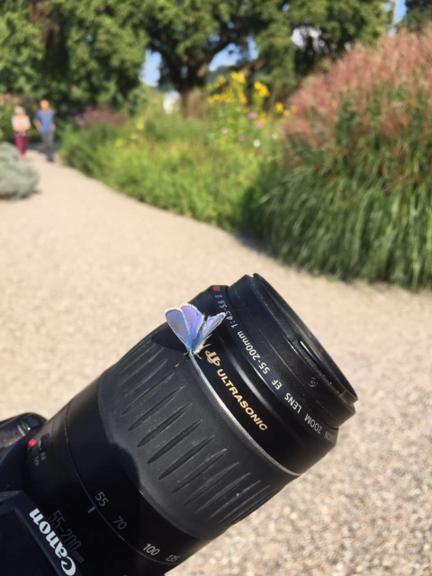

About Hobbies
I have several hobbies. These are, among others, photograpy, bicycling with my electric bicycle and since some time now again computer programming. Every day I am cooking my own meal and I like to do that also very much. I have a lot of cookbooks and I experiment with the recipes. And I am sitting always when the wheather allows it on the little terrace in front of my appartment, often together with neighbours, having a coffee and talking about the world.
Photography
Since long time, photography has become one of my favourite hobbies. In the analog times, photography has been too expensive for me to become a hobby, but since the 2000s when photography became affordable and digital, I discovered that as a hobby for me.
In the beginning, I had a little camera from Hewlett Packard, but then I bought a used Canon 350D camera. This camera accompanied me a very long time. Now I have a Canon 650D camera. I have bought the 650D not because I could make better photos with it, but because it has the possibility to make videos.

I have a lot of good photos, perhaps one day I'll publish a collection of them. Since 2020, I have also made a lot of videos with the camera.
When I use my photos, I don't like to manipulate them. I only change the exposure if needed or I take a picture detail and that is all of manipulation that I make on the photos.
Tours with my electric bicycle
I use my e-bike every day. It is my main means of traffic. Before I had the bicycle, I often used the train and the bus, but since I have bought the e-bike in 2020, I only use the bicycle for local traffic.

In the time of the year with good wheather I like to make bicycle tours to the surrounding places.
Computer programming
In the last time I have again very much fun in computer programming. Although I have been developing software professionally and some time couldn't stand seeing computer programs in my free time, I have rediscovered this skill as something very valuable for me.
So it has become again one of my hobbies. I was even able to make successfully a course in Python programming at CS50. This I want to continue. I am very interested in the developments in the field of artificial intelligence.

I can extend my gallery of courses because I have finished the course CS50's Introduction to Computer Science in May 2025.

It is especially good, I think, to take these courses online. I can learn just in my own rhythm.
My favourite programming language is C, because it is so clear and it is the swiss army knife of programming. What I also like is the language Pascal.